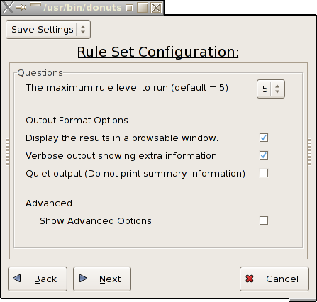
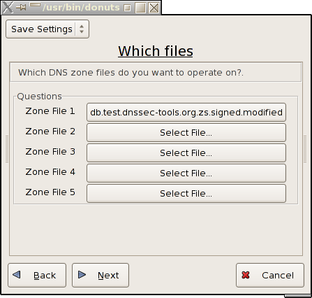
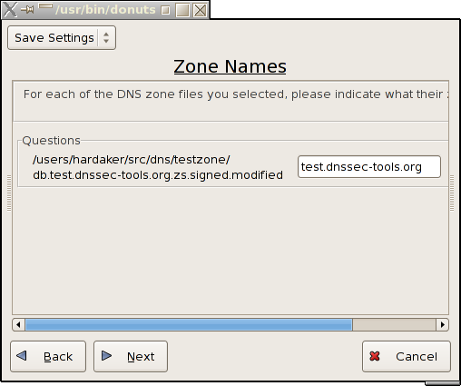
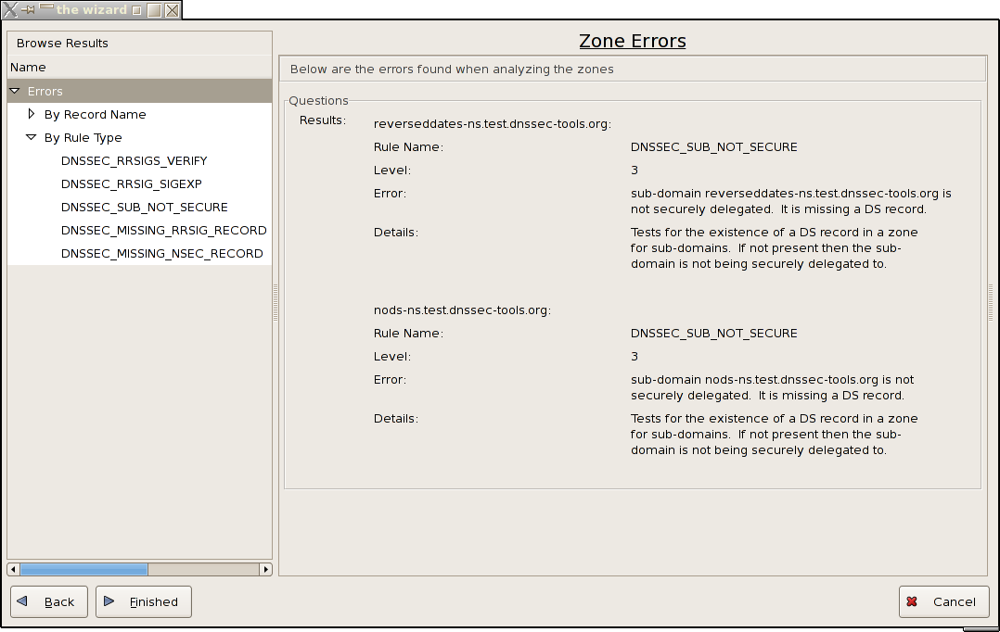

DoNutS GUI Option settings
The following images show the GUI option screens. If you run donuts without any arguments you'll get a series of screens walking you through the settings to run donuts.
The Main Options
Picking Zone Database Files
Assigning Zone Names
DoNutS GUI Error Browser
The errors resulting from running donuts can be shown in a graphical browsing window if you select the --show-gui flag or use the graphical option interface and check the "Display the results in a browsable window" checkbutton..
